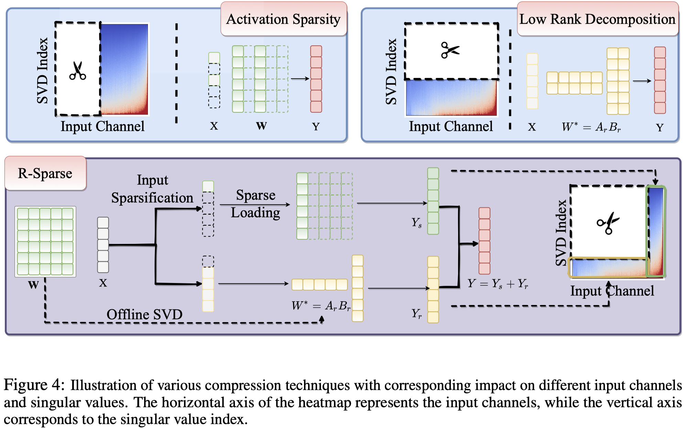

R-Sparse: Rank-Aware Activation Sparsity for Efficient LLM Inference

Abstract
Large Language Models (LLMs), while demonstrating remarkable capabilities across various applications, present significant challenges during inference due to their substantial model size, especially when deployed on edge devices. Activation sparsity offers a promising solution to reduce computation and memory movement, enabling more efficient inference, particularly for small-batch on-device applications. However, current approaches face limitations with non-ReLU activation function, which are foundational to most advanced LLMs, or require heavy continual training. Additionally, the difficulty in predicting active channels and limited achievable sparsity ratios constrain the effectiveness of activation sparsity-based methods. In this paper, we introduce R-Sparse, a training-free activation sparsity approach capable of achieving high sparsity levels in advanced LLMs. We conducted two preliminary investigations into how different components contribute to the output within a single linear layer and found two key observations: (i) the non-sparse components of the input function can be regarded as a few bias terms, and (ii) The full computation can be effectively approximated by an appropriate combination of input channels and weight singular values. Building on this, we replace the linear layers in LLMs with a rank-aware sparse inference method that leverages the sparsity of input channels and singular value components, eliminating the need for active channel prediction like the output sparsity based approaches. Experiments on Llama-2/3 and Mistral models across ten diverse tasks demonstrate that R-Sparse achieves comparable performance at 50% model-level sparsity, resulting in a significant 43% end-to-end efficient improvements with customized kernels.